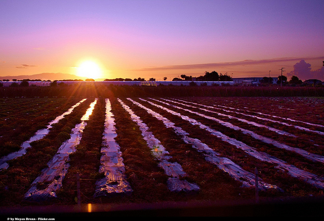

Beyond the smart city: why our needs extend beyond where we live
How can cities and rural areas learn from each other? Our common needs shed light on what really matters in smart programmes: people and planet, says Simon Gough of ODI Devon

"The success or failure of crops is everyone’s concern." - CC BY 2.0, uploaded by Moyan Brenn.
Since we first set up ODI Devon last October we’ve been working on our unique focus as the Open Data Institute’s first rural node.
It was tempting to challenge the narrative of smart cities with our own ‘smart rural’ story, but that approach proved to be strewn with problems. In particular, the difficulty of defining smart rural’s parameters, both thematically and geographically.
It’s relatively simple to think of smart cities as autonomous entities. We can brand them, rank them, sell them. We feel we can know them. Rural areas are quite different: they could be a village, a region, or simply everywhere that isn’t a city.
This leads us to consider smart rural as “other”, and this is where a simple definition unravels and we need to think again.
First, we have to question the notion of being inside and outside a place. What does this actually mean in the context of data and networks? Is the internet defined or restricted by location? Surely this is counter-intuitive.
Second, we start to realise that cities and rural areas are more similar than different. Food, transport, energy, climate; these are all shared concerns. Human needs are universal and if smart initiatives aren’t focusing on human needs, then what are they for?
But most importantly, when we start thinking about smart rural and smart cities we stop thinking holistically. As much as it helps to neatly package things up it’s not until we embrace the messy uncertainty of complex, interdependent systems that we can start to tackle the bigger challenges.
Once we look beyond smart cities and smart rural to ‘smart everywhere’, we can start to pull out what matters. After all, how meaningful is it to consider the food supply or data in general when it’s confined to a city? Our weather, energy supplies, transport networks and waste management are similarly unrestricted by location.
However, blurring the boundaries isn’t just about acknowledging similarities. One of the greatest benefits of connecting ideas is the creative impetus of diversity. How can cities and rural areas learn from each other? We’re already seeing agriculture reach cities through Vertical Farming in the same way that things we consider to be urban technologies, such as drones, are finding practical uses in the countryside. The benefits of dialogue are clear.
All this thinking about common themes, opportunities for learning and new applications provides a fresh context for what really matters in smart programmes. Ultimately we get down to the fundamental concerns of people and planet – how can all this technology be more human-centred and more sustainable, instead of technology for the sake of it?
Of course there will always be smart initiatives that are uniquely rural or urban, such as Precision Agriculture or CITISENSE, but we need to stop seeing these as other people's realms. The success or failure of crops is everyone’s concern; urban pollution can impact on generations of people everywhere.
Data is fundamental to the vast majority of these initiatives. Without it we can’t effectively monitor, improve and innovate. But for us to get the most from connected devices and connected thinking we need that data to be open. It’s not enough to break down the conceptual walls between cities and everywhere else; we need to invest in real connections, real infrastructure for making data accessible to everyone.
The ODI’s recent discussion paper, ‘Who owns our data infrastructure?’ recognises the value of this holistic view, but it also highlights the importance of identifying needs.
Whether we’re designing a better data infrastructure or a better food supply, we have to start with the needs of people, and these needs extend well beyond where we live.
ODI Devon’s launch event, Beyond the Smart City is running from the 25 – 27 June in partnership with the Met Office. Find out more about the speakers and themes here.
Simon Gough is Director at human-centred consultancy and design group Redfront and ODI Devon. Follow @mistergough, @ODIDevon and @Redfront on Twitter.
Do you have something you'd like to share about your experience with open data, its benefits or challenges? We'd love to hear your views. Pitch us a blog to [email protected] or tweet us at @ODIHQ.